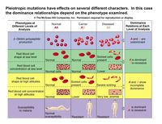
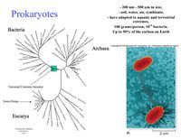
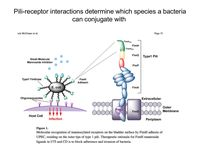
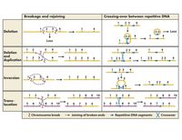
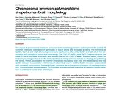
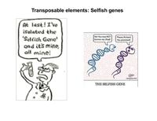
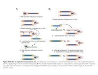
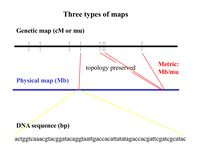
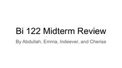

Bi 122 · Genetics · Fall 2025
Lecture Materials
Every lecture handout and review deck from the course, grouped by the week it was posted. Click any item to read it here.
Week 2

Mendelian inheritance and epistasis Preview Quantitative traits and mapping PreviewWeek 3

Prokaryotes Preview
Prokaryotes and recombination mechanisms PreviewWeek 4

Recombination mechanisms and rearrangements Preview
Rearrangements and selfish genes PreviewWeek 5

Selfish genes Preview
End of selfish genes; imprinting Preview
Genomics Preview
Midterm reviewReview PreviewWeek 9
About these files
Handouts are grouped by the week they were posted, which does not always line up with the
lecture schedule — the course ran slightly
behind the syllabus. Images have been
recompressed for faster loading; page counts are unchanged. Problem sets, solutions, the
Griffiths textbook and the two assigned Atlantic articles remain on
Canvas.